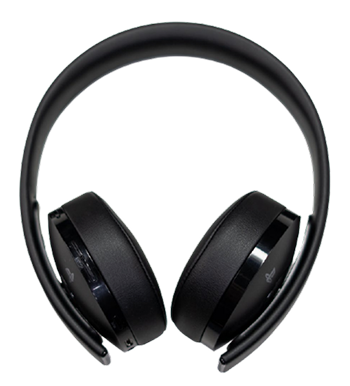
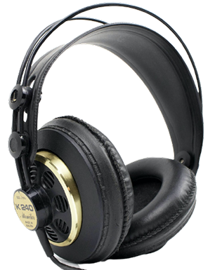

Cart
Your cart is empty

NEW PRODUCT
The new XX99 Mark II headphones is the pinnacle of pristine audio. It redefines your premium headphone experience by reproducing the balanced depth and precision of studio-quality sound.
SEE PRODUCT
As the gold standard for headphones, the classic XX99 Mark I offers detailed and accurate audio reproduction for audiophiles, mixing engineers, and music aficionados alike.
SEE PRODUCT
Enjoy your audio almost anywhere and customize it to your specific tastes with the XX59 headphones. The stylish yet durable versatile wireless headset is a brilliant companion at home or on the move.
SEE PRODUCTLocated at the heart of New York City, Audiophile is the premier store for high end headphones, earphones, speakers, and audio accessories. We have a large showroom and luxury demonstration rooms available for you to browse and experience a wide range of our products. Stop by our store to meet some of the fantastic people who make Audiophile the best place to buy your portable audio equipment.